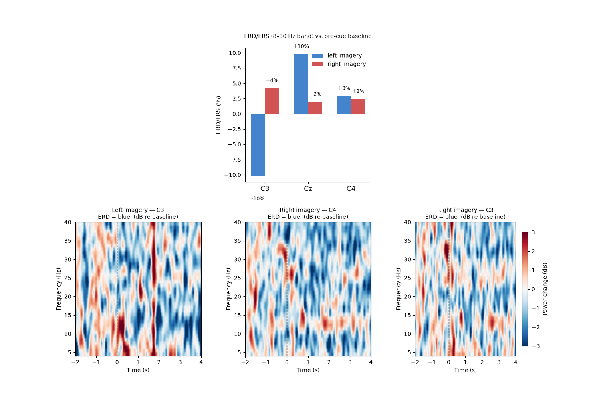
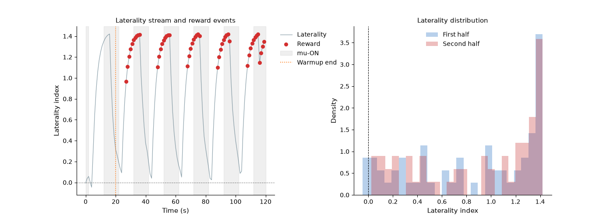

Note
Go to the end to download the full example code.
Motor imagery neurofeedback — ERD/ERS laterality#
Motor imagery (MI) neurofeedback trains participants to modulate the event-related desynchronisation (ERD) of the sensorimotor mu (8–12 Hz) and beta (13–30 Hz) rhythms over the motor cortex. Imagining left-hand movement produces ERD over the contralateral (right) hemisphere (C4), and vice versa for right-hand imagery (C3).
This example demonstrates ANT’s MI-NF workflow using the
PhysioNet EEG Motor Movement/Imagery Dataset,
loaded via mne.datasets.eegbci.load_data():
Load runs 6, 10, 14 (imagined left vs. right fist) for subject 1.
Extract 4-second epochs time-locked to the imagery cue.
Compute per-trial ERD/ERS (%) in the 8–30 Hz band for C3 and C4.
Derive a laterality index:
(C4 − C3) / (C4 + C3)— positive for right-hand imagery, negative for left-hand imagery.Demonstrate a closed-loop NF session using
simulate_raw()to generate a right-hemisphere mu-band source with a clear 10 s on/off pattern, stream it throughRTStreamwithmock_lsl=True, and drive aZScoreProtocolthat rewards C4 > C3 laterality in real time.
Note
The example downloads ~15 MB of data on first run via
mne.datasets.eegbci.load_data().
Load PhysioNet EEGBCI motor imagery data#
import os
import tempfile
from pathlib import Path
import matplotlib.pyplot as plt
import mne
import numpy as np
from scipy.signal import butter, sosfiltfilt
from mne_rt import RTStream
from mne_rt.protocols import ZScoreProtocol
from mne_rt.tools import simulate_raw
mne.set_log_level("WARNING")
SUBJECT = 1
RUNS = [6, 10, 14]
files = mne.datasets.eegbci.load_data(SUBJECT, RUNS, update_path=True, verbose=False)
raws = [mne.io.read_raw_edf(f, preload=True, verbose=False) for f in files]
raw = mne.concatenate_raws(raws)
mne.datasets.eegbci.standardize(raw)
SFREQ = raw.info["sfreq"] # 160 Hz
raw.filter(l_freq=1.0, h_freq=40.0, verbose=False)
print(f"Channels: {raw.info['nchan']} | sfreq: {SFREQ:.0f} Hz | "
f"Duration: {raw.times[-1]:.0f} s")
Channels: 64 | sfreq: 160 Hz | Duration: 375 s
Extract imagined-movement epochs#
- Event codes:
T0 = rest, T1 = left-fist imagery, T2 = right-fist imagery
We use a 1.5 s pre-cue baseline (−2.0 to −0.5 s) rather than the raw 0.5 s window: the longer estimate is far more stable and prevents the near-zero baseline values that inflate percentage ERD/ERS and TFR dB scores.
events, event_id = mne.events_from_annotations(raw, verbose=False)
MI_LEFT = event_id["T1"]
MI_RIGHT = event_id["T2"]
TMIN, TMAX = -2.0, 4.0
BASELINE = (-2.0, -0.5)
epochs = mne.Epochs(
raw,
events,
event_id={"left": MI_LEFT, "right": MI_RIGHT},
tmin=TMIN, tmax=TMAX,
baseline=BASELINE,
picks=["C3", "Cz", "C4"],
preload=True,
verbose=False,
)
print(f"Epochs: {len(epochs)} | "
f"left={len(epochs['left'])} right={len(epochs['right'])}")
Epochs: 45 | left=21 right=24
Compute ERD/ERS in the mu + beta band (8–30 Hz)#
ERD/ERS is defined relative to a pre-cue baseline power:
Values < 0 = desynchronisation (ERD, power decrease during imagery). Values > 0 = synchronisation (ERS, rebound after imagery offset).
def _band_power(data, sfreq, fmin=8.0, fmax=30.0):
sos = butter(4, [fmin, fmax], btype="bandpass", fs=sfreq, output="sos")
filtered = sosfiltfilt(sos, data, axis=-1)
return np.mean(filtered ** 2, axis=-1)
t_epoch = epochs.times
base_mask = (t_epoch >= BASELINE[0]) & (t_epoch < BASELINE[1])
act_mask = (t_epoch >= 0.5) & (t_epoch <= 3.5)
ch_idx = {ch: i for i, ch in enumerate(["C3", "Cz", "C4"])}
erd_data = {}
for label in ("left", "right"):
ep_data = epochs[label].get_data()
base_pw = _band_power(ep_data[:, :, base_mask], SFREQ)
act_pw = _band_power(ep_data[:, :, act_mask], SFREQ)
erd_data[label] = (act_pw - base_pw) / (base_pw + 1e-30) * 100.0
for label in ("left", "right"):
c3_erd = erd_data[label][:, ch_idx["C3"]].mean()
c4_erd = erd_data[label][:, ch_idx["C4"]].mean()
print(f"{label:5s} imagery — C3 ERD: {c3_erd:+.1f}% C4 ERD: {c4_erd:+.1f}%")
left imagery — C3 ERD: -10.2% C4 ERD: +2.9%
right imagery — C3 ERD: +4.2% C4 ERD: +2.5%
Time-frequency analysis#
Morlet wavelet power is computed trial-by-trial and averaged. The 1.5 s pre-cue baseline (−2.0 to −0.5 s) is then used to express each time-frequency cell in decibels:
Negative dB = ERD (power below baseline), positive dB = ERS.
Real-time NF session with simulated motor lateralisation#
Instead of streaming the mixed PhysioNet recording (rest + both imagery
classes interleaved), we use simulate_raw() to synthesise a
64-channel biosemi64 EEG with a right-hemisphere mu (12 Hz) source in
precentral-rh, alternating in 10 s ON / 10 s OFF bursts. During ON
bursts C4 receives the strongest forward-model projection and
laterality = (C4 − C3)/(C4 + C3) is clearly positive.
The ZScoreProtocol with direction="up" rewards
windows where C4 dominates, mimicking a closed-loop right-hemisphere mu
enhancement protocol (contralateral to left-hand imagery).
Expected mu-ON windows in the 120 s main session:
Main t (s): 0──2 12──22 32──42 52──62 72──82 92──102 112──120
■■■ ██████ ██████ ██████ ██████ ███████ ████
_tmp_dir = Path(tempfile.mkdtemp())
fname_motor = _tmp_dir / "motor_sim.fif"
simulate_raw(
brain_label="precentral-rh",
frequency=12.0,
amplitude=50.0,
duration=10.0,
gap_duration=20.0,
n_repetition=7,
start=2.0,
data_type="eeg",
sfreq=256.0,
fname_save=str(fname_motor),
verbose=False,
)
protocol = ZScoreProtocol(
direction="up",
warmup_windows=20,
zscore_threshold=0.5,
)
nf = RTStream(
subject_id="motor01",
session="01",
subjects_dir=str(_tmp_dir),
montage="biosemi64",
data_type="eeg",
verbose=False,
)
nf.connect_to_lsl(mock_lsl=True, fname=str(fname_motor), verbose=False)
nf.record_baseline(baseline_duration=10, verbose=False)
nf.record_main(
duration=120,
modality=["laterality"],
winsize=2.0,
signal_smoothing=0.3,
protocol=protocol,
show_nf_signal=False,
show_raw_signal=False,
show_topo=False,
verbose=False,
)
lat_arr = np.asarray(nf.nf_data.get("laterality", []))
reward_vals = np.asarray(nf.reward_data.get("laterality", []))
reward_arr = reward_vals > 0
print(f"NF windows : {len(lat_arr)} | rewards : {int(reward_arr.sum())} "
f"({100*reward_arr.mean():.0f} % of all windows)")
/home/runner/work/mne-rt/mne-rt/docs/source/../../src/mne_rt/tools/simulation.py:222: RuntimeWarning: No average EEG reference present in info["projs"], covariance may be adversely affected. Consider recomputing covariance using with an average eeg reference projector added.
add_noise(raw, cov, iir_filter=iir_filter, verbose=verbose)
/home/runner/work/mne-rt/mne-rt/docs/source/../../src/mne_rt/tools/simulation.py:233: RuntimeWarning: This filename (/tmp/tmpkc0ci5qd/motor_sim.fif) does not conform to MNE naming conventions. All raw files should end with raw.fif, raw_sss.fif, raw_tsss.fif, _meg.fif, _eeg.fif, _ieeg.fif, raw.fif.gz, raw_sss.fif.gz, raw_tsss.fif.gz, _meg.fif.gz, _eeg.fif.gz or _ieeg.fif.gz
raw.save(fname=Path(fname_save), overwrite=True)
/home/runner/work/mne-rt/mne-rt/docs/source/../../src/mne_rt/rt_stream.py:943: RuntimeWarning: This filename (/tmp/tmpkc0ci5qd/motor_sim.fif) does not conform to MNE naming conventions. All raw files should end with raw.fif, raw_sss.fif, raw_tsss.fif, _meg.fif, _eeg.fif, _ieeg.fif, raw.fif.gz, raw_sss.fif.gz, raw_tsss.fif.gz, _meg.fif.gz, _eeg.fif.gz or _ieeg.fif.gz
self._mock_player = Player(
NF windows : 120 | rewards : 49 (41 % of all windows)
Figure 1 — ERD/ERS bar chart and TFR#
fig1, axes = plt.subplots(2, 3, figsize=(15, 10),
gridspec_kw={"hspace": 0.30, "wspace": 0.35})
ax_bar = axes[0, 1]
x = np.arange(3)
w = 0.33
colors = {"left": "#1565C0", "right": "#C62828"}
for i_label, (label, color) in enumerate(colors.items()):
vals = [erd_data[label][:, ch_idx[ch]].mean() for ch in ["C3", "Cz", "C4"]]
bars = ax_bar.bar(x + (i_label - 0.5) * w, vals, w,
color=color, alpha=0.80, label=f"{label} imagery")
for bar, val in zip(bars, vals):
ax_bar.text(bar.get_x() + bar.get_width() / 2,
bar.get_height() + (1 if val >= 0 else -4),
f"{val:+.0f}%", ha="center", fontsize=9)
ax_bar.axhline(0, color="black", lw=0.8, ls="--", alpha=0.5)
ax_bar.set_xticks(x)
ax_bar.set_xticklabels(["C3", "Cz", "C4"], fontsize=12)
ax_bar.set_ylabel("ERD/ERS (%)", fontsize=11)
ax_bar.set_title("ERD/ERS (8–30 Hz band) vs. pre-cue baseline\n", fontsize=10)
ax_bar.legend(fontsize=10, frameon=False)
ax_bar.spines[["top", "right"]].set_visible(False)
axes[0, 0].axis("off")
axes[0, 2].axis("off")
tfr_pairs = [("left", "C3"), ("right", "C4"), ("right", "C3")]
for ax, (label, ch) in zip(axes[1, :], tfr_pairs):
ci = ch_idx[ch]
tf = tfr[label][ci]
base_cols = (t_epoch >= BASELINE[0]) & (t_epoch < BASELINE[1])
base_mean = tf[:, base_cols].mean(axis=1, keepdims=True)
tf_db = 10.0 * np.log10(tf / (base_mean + 1e-30))
im = ax.imshow(
tf_db, aspect="auto", origin="lower",
extent=[t_epoch[0], t_epoch[-1], freqs[0], freqs[-1]],
cmap="RdBu_r", vmin=-3, vmax=3
)
ax.axvline(0, color="k", lw=1.0, ls="--")
ax.set_xlabel("Time (s)", fontsize=10)
ax.set_ylabel("Frequency (Hz)", fontsize=10)
ax.set_title(f"{label.capitalize()} imagery — {ch}\nERD = blue (dB re baseline)",
fontsize=10)
plt.colorbar(im, ax=ax, label="Power change (dB)", shrink=0.85)
fig1.tight_layout()

/home/runner/work/mne-rt/mne-rt/examples/ex_motor_imagery_nf.py:278: UserWarning: This figure includes Axes that are not compatible with tight_layout, so results might be incorrect.
fig1.tight_layout()
Figure 2 — Real-time NF stream#
Laterality index and reward delivery events from the simulated ANT session. Grey bands mark expected mu-ON periods; rewards should align with them.
# mu-ON windows (seconds, relative to main-session start)
_mu_on = [(0, 2), (12, 22), (32, 42), (52, 62), (72, 82), (92, 102), (112, 120)]
hop_s = 1.0 # winsize=2.0 s with 50 % overlap → 1 s per step
fig2, (ax_lat, ax_hist) = plt.subplots(1, 2, figsize=(14, 5),
gridspec_kw={"wspace": 0.40})
t_s = np.arange(len(lat_arr)) * hop_s
ax_lat.plot(t_s, lat_arr, color="#607D8B", lw=0.9, alpha=0.7, label="Laterality")
ax_lat.scatter(t_s[reward_arr], lat_arr[reward_arr],
s=30, color="#D32F2F", zorder=5, label="Reward")
for t0, t1 in _mu_on:
ax_lat.axvspan(t0, t1, alpha=0.12, color="grey",
label="mu-ON" if t0 == 0 else None)
ax_lat.axhline(0, color="k", lw=0.7, ls="--", alpha=0.5)
ax_lat.axvline(20, color="#FF6F00", lw=1.2, ls=":", label="Warmup end")
ax_lat.set_xlabel("Time (s)", fontsize=11)
ax_lat.set_ylabel("Laterality index", fontsize=11)
ax_lat.set_title("Laterality stream and reward events", fontsize=11)
ax_lat.legend(fontsize=10, frameon=False, bbox_to_anchor=(1, 1))
ax_lat.spines[["top", "right"]].set_visible(False)
half = len(lat_arr) // 2
ax_hist.hist(lat_arr[:half], bins=25, alpha=0.3, color="#1565C0",
density=True, label="First half")
ax_hist.hist(lat_arr[half:], bins=25, alpha=0.3, color="#C62828",
density=True, label="Second half")
ax_hist.axvline(0, color="k", lw=0.8, ls="--")
ax_hist.set_xlabel("Laterality index", fontsize=11)
ax_hist.set_ylabel("Density", fontsize=11)
ax_hist.set_title("Laterality distribution", fontsize=11)
ax_hist.legend(fontsize=10, frameon=False)
ax_hist.spines[["top", "right"]].set_visible(False)
fig2.tight_layout()

/home/runner/work/mne-rt/mne-rt/examples/ex_motor_imagery_nf.py:320: UserWarning: This figure includes Axes that are not compatible with tight_layout, so results might be incorrect.
fig2.tight_layout()
Total running time of the script: (2 minutes 34.461 seconds)